综合小红书 6 篇高赞笔记 + 500+ 条评论
2026.03.29 by 小胖
点击标记查看景点简介，颜色区分路线
开花日：3月25日 | 盛花期：3/31-4/10（清明可冲！）
樱花节: 典农路 3.27-3.29 | 猊来公园 4.4-4.5 | 油菜花节: 鹿山路 4.4-4.5
多篇笔记一致推荐最美路线
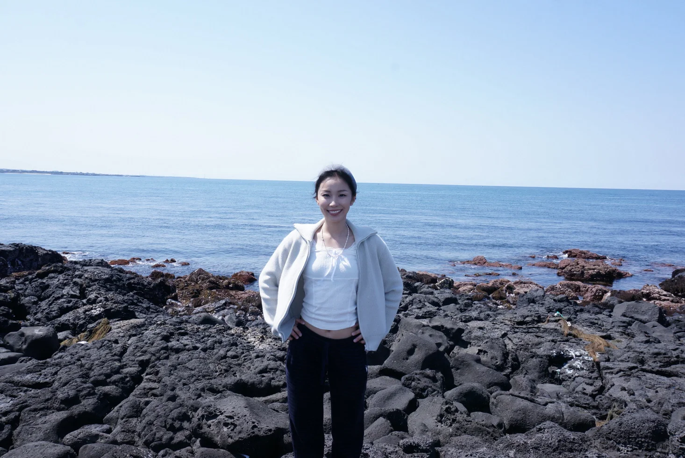
济州最美离岛，翡翠色海蚀洞、白沙滩。7:30首班船，玩3h足够。逆时针方向逛离快艇近。船票约1万韩元/人。
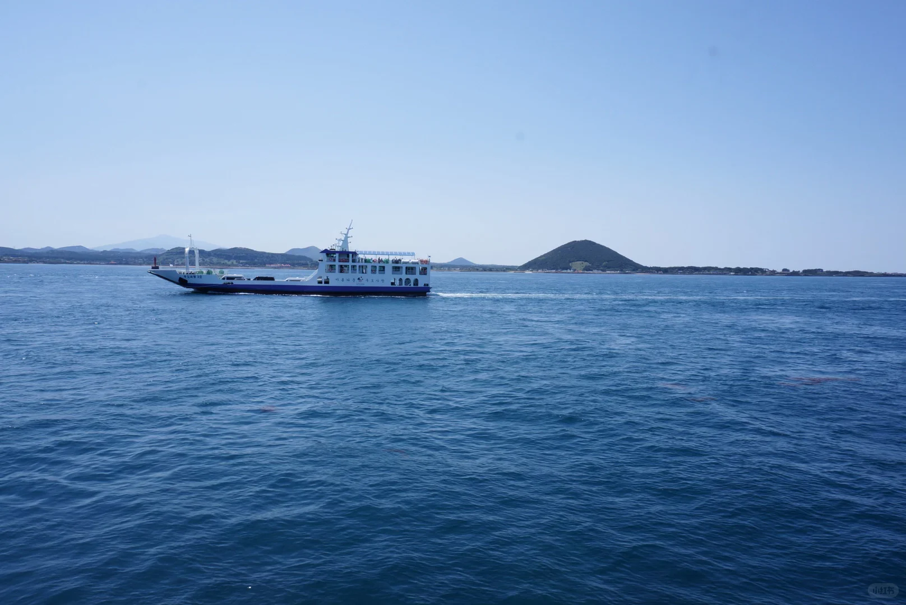
182m火山口，30min登顶。早上10点前人少，下山后步行20min可到牛岛码头（偶来小路1号线）。
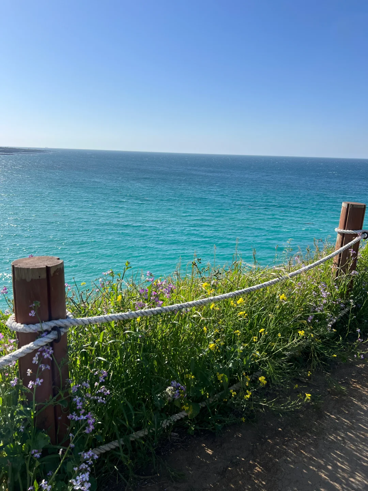
果冻色清澈海水，沙子细腻。爬旁边的小山可以俯瞰全景。多位博主评价"济州最美沙滩"。
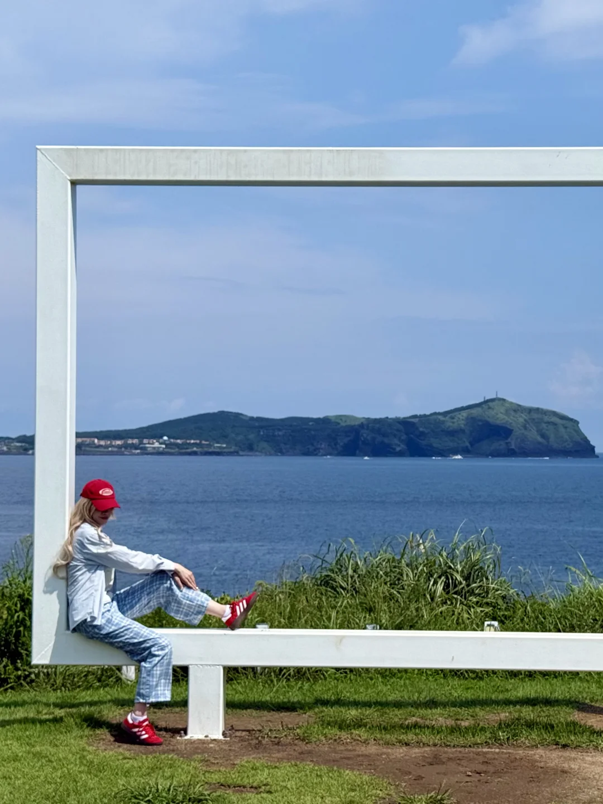
韩剧般的绝美海岸，白色灯塔标志性打卡点。火山+海洋+花田同框，建议日落前到。离日出峰较远需打车。
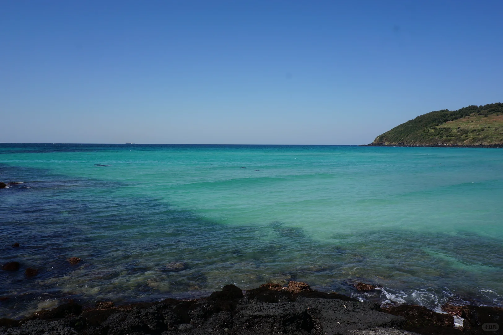
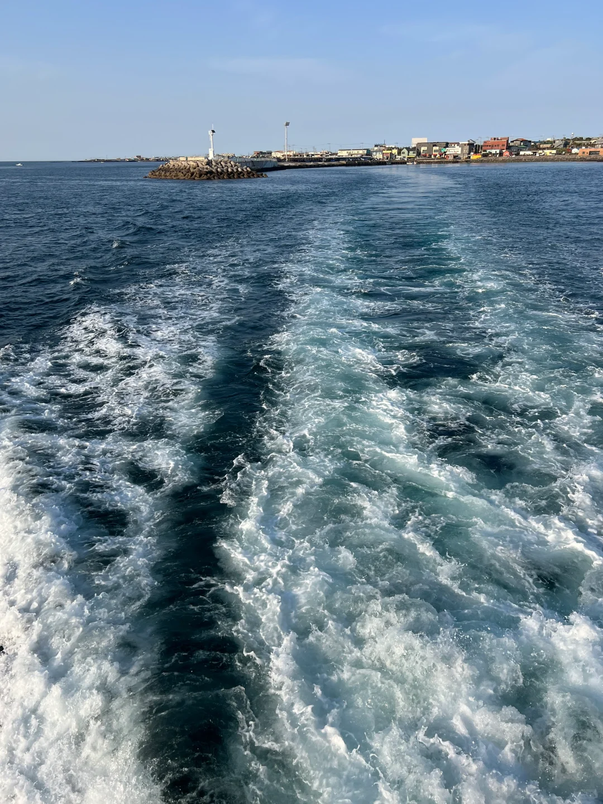
牛岛火山岩海岸 · 咸德海水浴场山顶俯瞰 · 图源@Gl!
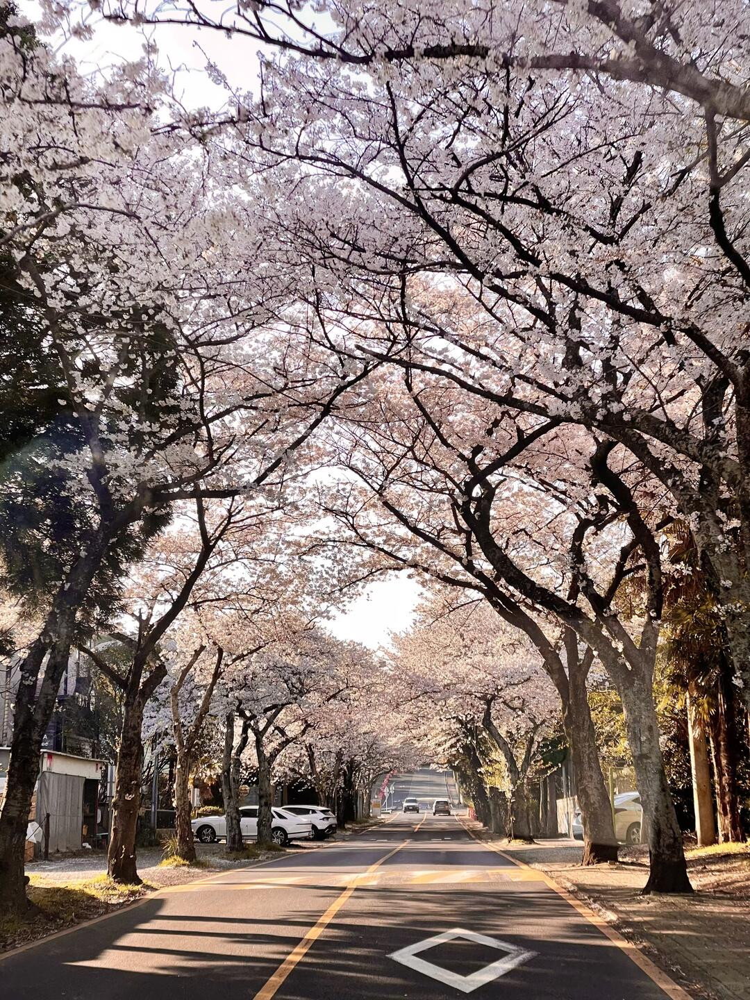
典农路 · 1.2km樱花隧道 · 有夜樱灯光（3.27-3.29樱花节）· 图源@lilithluluz
樱花+油菜花同框！8.5km公路，一侧粉色一侧金黄。人比典农路少90%。需包车前往，公交不方便。
最佳: 3.25-4.10 早9前/晚4:30后光线好
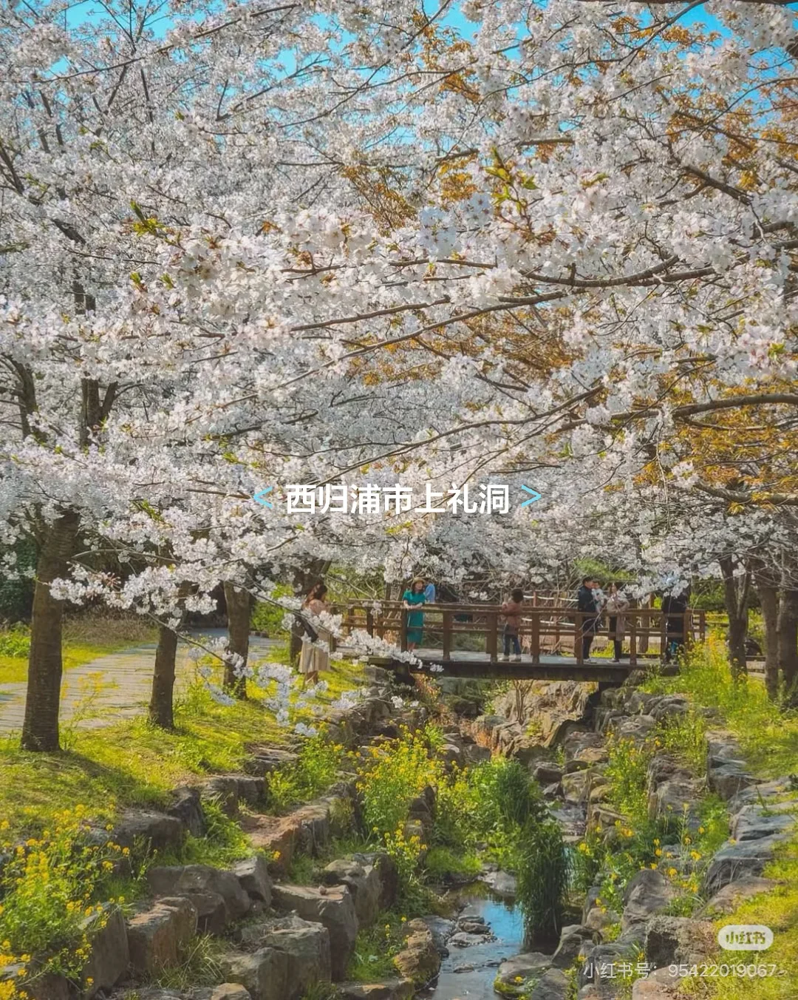
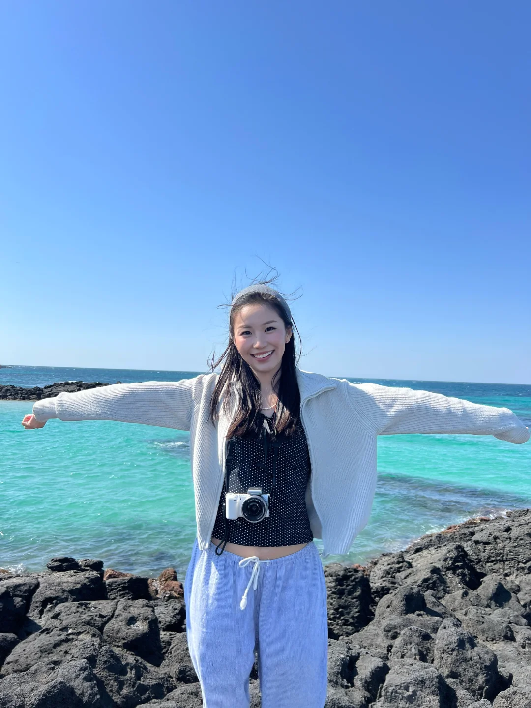
樱花溪流 · 海岸油菜花田 · 图源@Gl! @逛吃菌
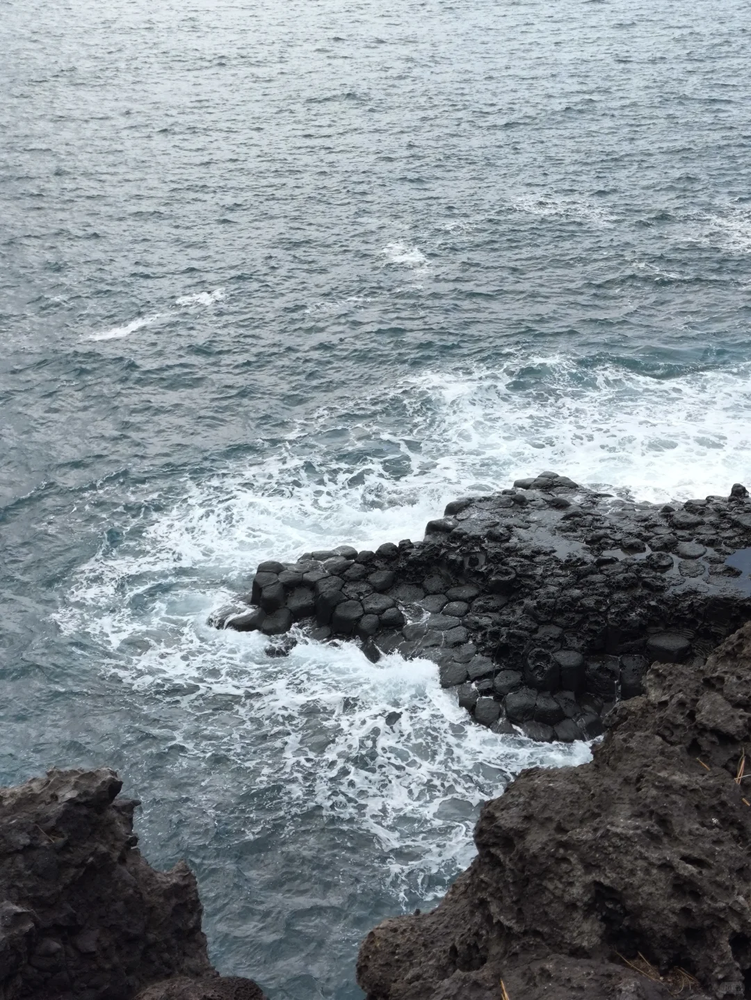
火山熔岩遇海水冷却形成的六角形石柱群，很壮观。门票2000韩元，1小时够逛。风很大带帽子！
600/601路到ICC下车
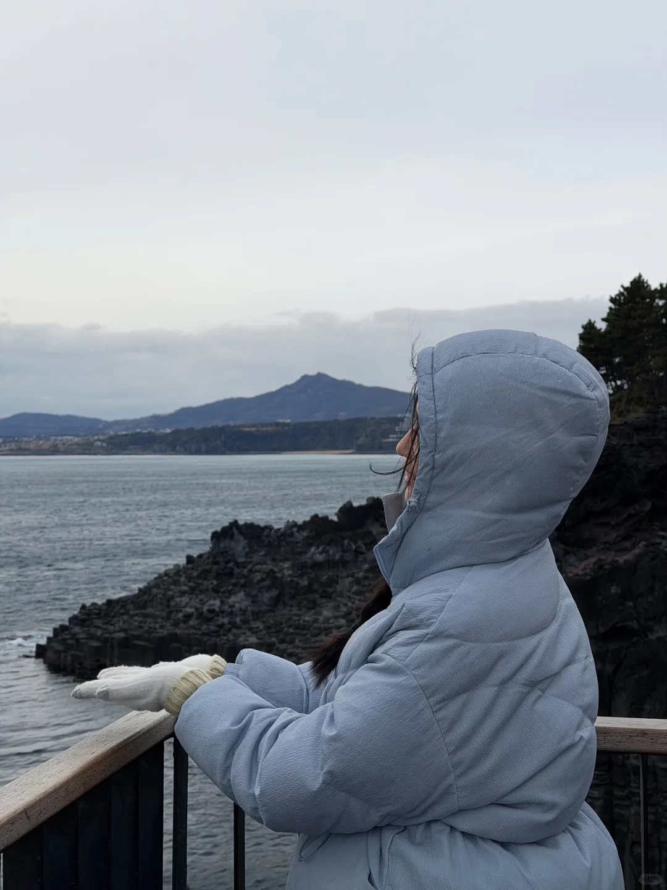
安静惬意的南部小城，人少景美。偶来市场晚上逛吃，但评价一般，东门市场更推荐。
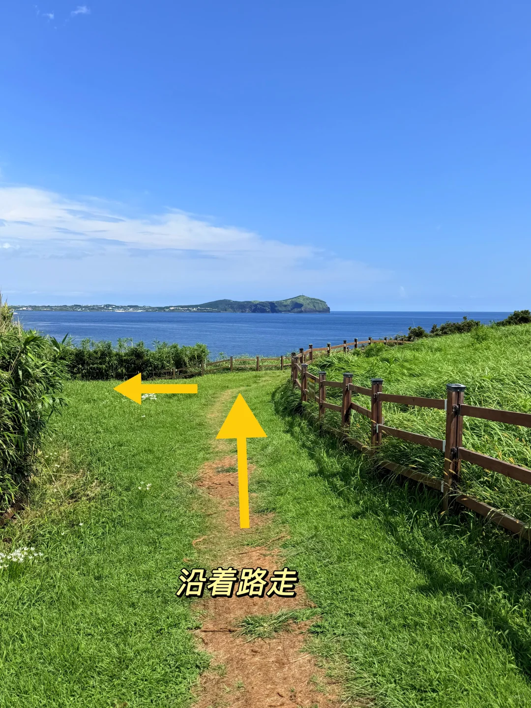
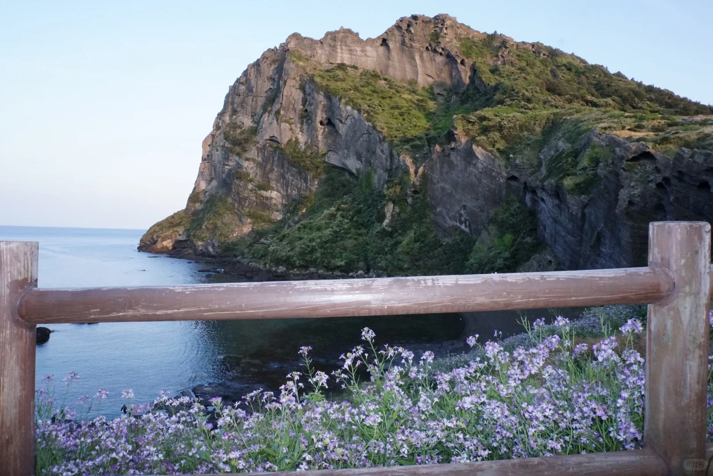
偶来小路 · 海岸徒步 + 田园风光 · 图源@Gl!
交通便利 离机场10min 吃喝购物多
评论区：住宝健路，不要住七星路（不是真正市中心）。不用住机场旁。
安静度假感 人少景美 适合情侣/亲子
评论区推荐：Seom Guesthouse 6F海景房，人均才100RMB
博主实测 4天 不到 3000 RMB/人
| 项目 | 费用 |
|---|---|
| 往返机票 | ~1,000+ |
| 3晚住宿(人均) | ~600 |
| 吃饭 | ~600 |
| 交通+门票 | ~500 |